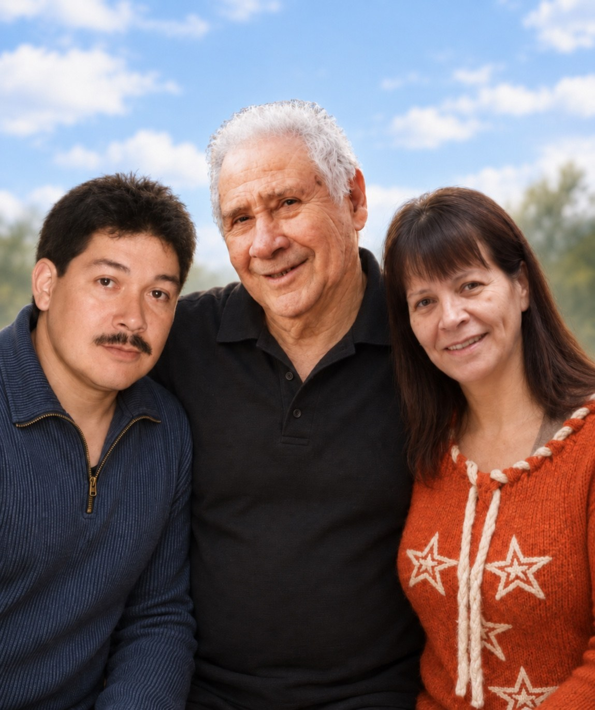

Un lugar para volver a recordar
En memoria de nuestros seres queridos

El amor permanece, los recuerdos florecen.
Cada vida dejó una huella, cada fotografía guarda una historia. Aquí siempre habrá un espacio para volver a encontrarnos con sus recuerdos.
Selecciona un homenaje
❦
HOMENAJE 01
Gabriel Osvaldo López Gre
Para ti, Gabriel
Han pasado tantos años desde tu partida, pero el tiempo jamás ha logrado borrar el amor ni los recuerdos que dejaste en nuestra familia.
Fuiste un hombre cariñoso, dedicado a los tuyos. Aunque tu trabajo muchas veces te llevaba lejos de casa, siempre encontrabas la manera de compensar tu ausencia con amor. Cada regreso era una oportunidad para compartir, abrazarnos y disfrutar de esos momentos que hoy guardamos como verdaderos tesoros.
Junto a ti, mamá encontró mucho más que un esposo: encontró a su compañero de vida, a esa persona con quien podía compartir sus alegrías, sus preocupaciones y sus sueños. Construyeron una hermosa historia de amor basada en el cariño, la complicidad y el apoyo mutuo. Dos personas profundamente enamoradas que eligieron caminar juntas y formar una familia.
De ese amor nació una familia que, con el paso de los años, ha seguido creciendo y construyendo su propia historia. Mamá ha sido un pilar fundamental en nuestras vidas, entregándonos su amor, sus enseñanzas y esa fortaleza que tanto admiramos. Todo lo que somos hoy también es reflejo de los valores y el cariño con los que nuestra familia fue formada.
Nos habría encantado compartir contigo tantos momentos importantes. Verte acompañar a tus hijos mientras crecían, celebrar sus logros y ser parte de las alegrías que trajo el paso de los años.
Hoy tus hijos han crecido y han encontrado sus propios caminos. Tu hijo también se convirtió en padre y tienes un nieto que seguramente habrías amado con todo tu corazón. Cuánto nos habría gustado verte junto a él, compartiendo ese mismo cariño que siempre entregaste a tu familia.
Nos gustaría que pudieras ver todo lo que hemos construido, cuánto hemos crecido y cómo nuestra familia continúa llevando consigo el amor y los recuerdos que nos dejaste. Estamos seguros de que sentirías un orgullo inmenso al ver en quiénes nos hemos convertido.
Hay tantas cosas que quisiéramos contarte, tantos abrazos pendientes y tantos momentos que nos habría gustado vivir contigo.
Porque aunque el tiempo siga pasando, siempre serás parte de nuestra familia, de nuestros recuerdos y de todo el amor que nos une.
Galería de recuerdos
Un recuerdo en video
HOMENAJE 02
Teresa del Carmen Valenzuela Reyes
Para ti, querida Teresa
Hay personas que llegan a nuestras vidas para enseñarnos que la felicidad no siempre se expresa con una sonrisa. A veces también se manifiesta en lágrimas, en abrazos y en emociones tan grandes que el corazón simplemente no puede contenerlas.
Así eras tú, Teresa. Una mujer alegre, sensible y de sentimientos profundos, que encontraba en los momentos compartidos con su familia razones suficientes para emocionarse hasta las lágrimas.
Cuántas veces, en medio de una celebración, te vimos llorar sin comprender del todo por qué lo hacías. Con el tiempo entendimos que aquellas lágrimas no eran de tristeza, sino de una felicidad tan inmensa que no cabía dentro de ti.
Hoy esos momentos se han convertido en algunos de los recuerdos más hermosos que nos dejaste, porque nos enseñaron que amar también significa sentir profundamente cada instante junto a quienes más queremos.
Fuiste una madre que dejó su amor en sus dos hijos y una abuela maravillosa para tus tres nietos, quienes forman parte de la hermosa historia que construiste durante tu vida.
Tu alegría, tu sensibilidad y esa manera tan especial de vivir las emociones dejaron una huella imborrable en nuestra familia.
Aunque los años hayan pasado desde tu partida, seguimos encontrándote en los recuerdos de nuestras reuniones, en las fotografías familiares y en cada celebración que nos hace recordar cuánto disfrutabas estar rodeada de quienes amabas.
Nos gustaría volver a verte sonreír, escucharte reír y, por qué no, volver a ver esas lágrimas de felicidad que antes no siempre comprendíamos y que hoy recordamos con tanto cariño.
Gracias por enseñarnos, sin siquiera proponértelo, que los momentos más sencillos pueden convertirse en los recuerdos más valiosos de nuestra vida.
Tu historia continúa viviendo en tus hijos, en tus nietos y en cada uno de los corazones que tuvieron la fortuna de conocerte y amarte.
Porque hay personas cuya alegría permanece incluso después de su partida, y la tuya seguirá acompañándonos en cada encuentro familiar.
Galería de recuerdos
HOMENAJE 03
Sergio Enrique Valenzuela Solorza
Para ti, Tata Sergio
Tata Sergio, aún cuesta encontrar las palabras para hablar de tu partida. Aunque el tiempo siga avanzando, tu ausencia continúa sintiéndose profundamente en nuestra familia.
Fuiste un hombre de un corazón inmenso, de esos que siempre buscan entregar lo mejor de sí mismos a quienes aman. Un padre maravilloso, un abuelo y bisabuelo cariñoso, un padrino presente y, sobre todo, una persona que hizo de la felicidad de su familia una parte fundamental de su vida.
Siempre dispuesto a enseñar, compartir sus conocimientos y entregar una palabra de cariño, dejaste en cada uno de nosotros recuerdos y enseñanzas que nos acompañarán para siempre.
Tus hijas encontraron en ti el amor de un padre, tus nietos el cariño de un abuelo y tus bisnietos la fortuna de compartir momentos con alguien tan especial. Cada generación de nuestra familia lleva consigo una parte de tu historia.
Y cómo no recordar el inmenso amor que compartiste con Mami Clara. Ella fue el amor de tu vida, tu compañera inseparable, con quien construiste una historia llena de recuerdos, alegrías y momentos compartidos.
Verlos juntos era ser testigos de un amor verdadero, de esos que se construyen con los años, con compañía, paciencia y pequeños gestos cotidianos. Un amor que permanece más allá de cualquier despedida.
Hoy nos hacen falta tu presencia, tus enseñanzas, tus abrazos y esos momentos sencillos que antes parecían cotidianos y que ahora se han convertido en nuestros recuerdos más preciados.
Nos queda el consuelo de saber que tu vida estuvo rodeada de amor y que dejaste una familia que te recuerda con inmenso cariño y gratitud.
Cuánto daríamos por volver a compartir una celebración contigo, escuchar tu voz una vez más o reunirnos todos alrededor de una mesa y verte sonreír.
Gracias por cada enseñanza, por cada gesto de cariño y por haber sido una parte tan importante de nuestras vidas.
Tu historia continúa viviendo en tus hijas, tus nietos, tus bisnietos y en el corazón de Mami Clara, tu gran amor y compañera de vida.
Porque mientras exista alguien que recuerde tu sonrisa, tus palabras y el amor que entregaste, una parte de ti seguirá siempre entre nosotros.